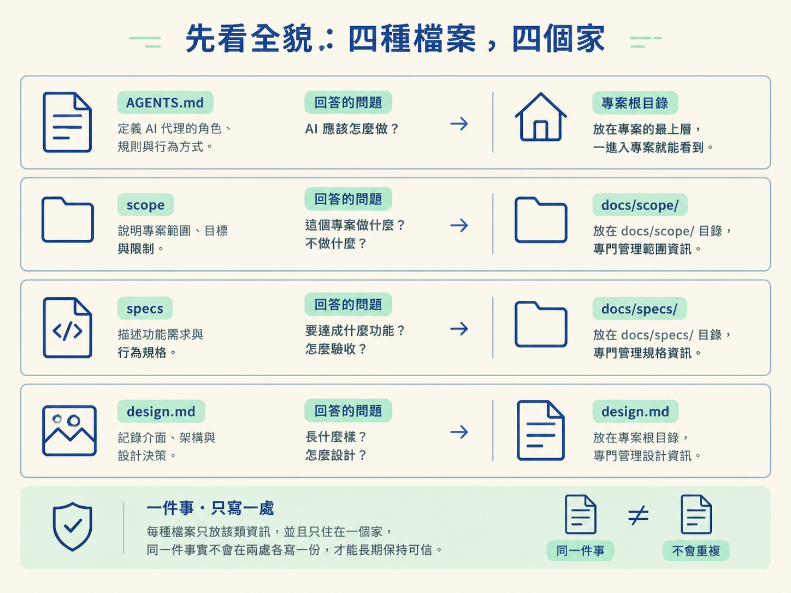
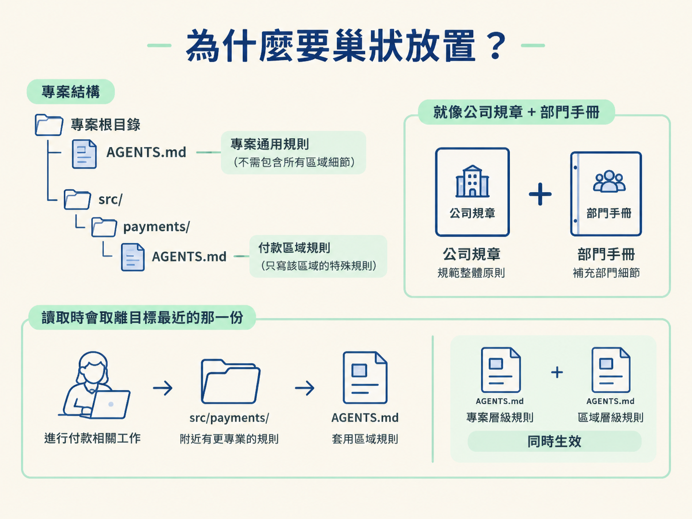
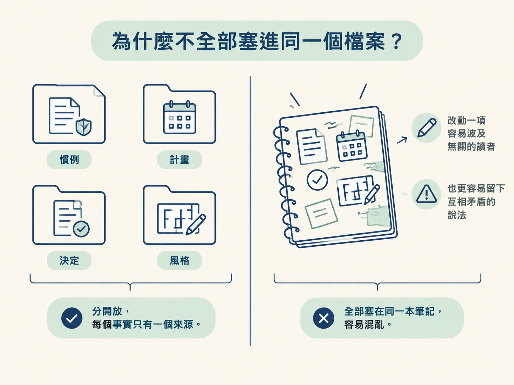

看完這一節，你應該能說出四種狀態檔各自負責什麼、住在哪裡，也能解釋 AGENTS.md 為什麼要巢狀放在不同資料夾。
上一節已經確定：工作流的狀態要放在檔案裡。現在換成一個更實際的情境：你接手一個陌生專案，打開根目錄，看到 AGENTS.md、docs/scope/、docs/specs/，還有 design.md。
它們看起來都像是在「記錄事情」，但記錄的其實不是同一種事。哪個檔案描述要蓋什麼？哪個檔案保存已經做出的決定？哪個檔案只是說明介面的風格？如果沒有分清楚，你就可能在該查決定時翻計畫，或在該看計畫時翻設計檔。
這一節先把四種檔案的職責與位置放回正確的家。下一節談「誰有權修改它們」時，你才知道要保護的是哪一種狀態。
這套工作流把專案知識拆成四種檔案。每一種檔案只回答一類問題，也只住在固定位置。像把工具分放在不同抽屜裡，找東西時不用猜，也不會讓同一個事實在兩處各寫一份，最後逐漸漂移。
| 檔案種類 | 它回答什麼 | 住在哪裡 |
|---|---|---|
AGENTS.md（加上 CLAUDE.md 指標） | 這個專案怎麼運作：技術棧、指令、慣例 | 專案根目錄；需要時也能在各資料夾內再放一份 |
scope | 要蓋什麼，以及用什麼順序蓋 | docs/scope/ |
specs | 某個真實決定是什麼，以及如何驗收 | docs/specs/ |
design.md | 介面的風格方向與規則 | design.md；實際數值放在 CSS |
接下來逐一看它們的邊界。每種檔案只放該類資訊，才能長期保持可信。

AGENTS.md：說明這個專案怎麼運作AGENTS.md 是 context 檔，記錄專案實際採用的技術棧、常用指令，以及需要遵守的慣例。它使用任何 coding agent 都能讀懂的一般純文字，因此不綁定特定工具。
如果使用 Claude Code，專案裡還會有一個很小的 CLAUDE.md。它不保存另一份規則，只負責指向 AGENTS.md。這樣真正的來源永遠只有一份，不會有兩個副本互相打架。
AGENTS.md 可以巢狀存在。根目錄的檔案寫所有區域都適用的通則；特定資料夾內的檔案，則補充只有該區域需要遵守的規則。
例如，專案根目錄可以有一份 AGENTS.md，而 src/payments/AGENTS.md 專門記錄付款程式碼的規定。某個 skill 修改付款程式碼時，會讀離目標最近的那一份，因此同時套用專案層級與付款區域的規則。
這樣做像是「公司規章加上部門手冊」：根目錄只保留通則，不必把每個區域的特殊情況全部塞進去。根檔案因此不會越長越肥，也不會讓每個 session 都讀到與目前工作無關的細節。

audit 負責建立 AGENTS.md，其他每個 skill 都會讀它；程式碼變動後，則由 sync 負責讓內容保持最新。慣例一旦寫進 context 檔，skill 就不需要靠猜測行事。
scope：要蓋什麼，以及先後順序scope 是一份粗略計畫，回答「要蓋什麼、按什麼順序蓋」，放在 docs/scope/。它由 scope 這個 skill 建立，之後由 develop 推進：把功能標成進行中，並勾掉已完成的里程碑。
但 develop 不會自行把功能標成完全完成：程式碼「蓋好了」，不代表它已經「驗證過了」。要把計畫對回程式碼的真實狀態，需要使用不帶參數的 /scope，以及合併前執行的 sync。
還有一個例外：如果 docs/ 本身是對外發布的文件網站，工作流會把這些檔案改寫到 .workflow/ 底下，避免它們跟著網站一起出貨。
specs：決定的紀錄，也是 build 的合約spec 是一個真實決定的書面紀錄，也是後續 build 必須遵守的合約，放在 docs/specs/。它由 architect 建立，通常會包含需求與驗收標準、最後選定的決定、設計，以及一份有順序的建置計畫。
它解決的是另一種問題：決定不能只留在對話裡。當選擇已經確定，就要留下檔案，讓 build 能照著執行，也讓之後的人查得到當初為什麼這樣做。
design.md：介面的風格方向design.md 保存介面的藝術方向，包括整個產品的性格，以及頁面應該如何組成的規則。它描述的是方向，不是所有細節數值。
確切的顏色、尺寸等數值放在專案的 CSS 裡，design.md 只負責指向它們。這樣同一個數值不會在兩個地方各寫一份，最後變得不一致。
第一次建立介面時，由 develop 建立 design.md；如果專案已經有畫面，也可以從現有畫面整理出來。
「專案怎麼運作」、「要蓋什麼」、「做了什麼決定」、「介面長什麼樣子」，這四件事的讀者不同，壽命也不同。
| 內容 | 特性 |
|---|---|
| 慣例 | 長期存在，所有 skill 都可能需要讀 |
| 計畫 | 會隨開發進度持續變動 |
| 決定 | 一旦確認，就成為穩定的 build 合約 |
| 風格 | 專屬於介面與視覺方向 |
把它們混在一起，就像把公司規章、施工排程、會議決議和室內設計圖塞進同一本筆記。改動其中一項時，容易波及無關的讀者，也更容易留下互相矛盾的說法。

四種狀態檔各有各的家：AGENTS.md說明專案怎麼運作，根目錄寫通則、資料夾內寫區域規則；scope記錄要蓋什麼與建置順序；spec保存真實決定與驗收標準；design.md描述介面的風格方向。分開放，是為了讓每個事實只有一個來源，不會互相漂移。
現在你已經能從檔名和路徑判斷它們各自負責的狀態。下一個問題是：誰可以建立、讀取或修改這些檔案？如果任何 skill 都能隨手改動 spec 的內容或狀態，這張地圖很快又會糊成一團。下一節會用一張表，把每個檔案的建立者、讀者與修改者固定下來。